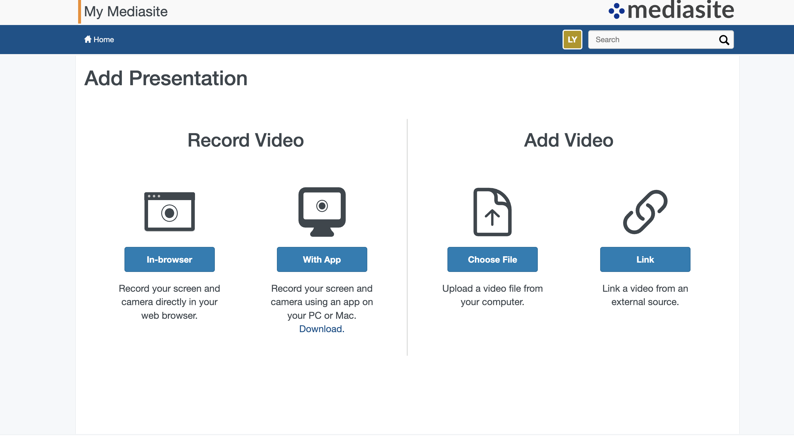
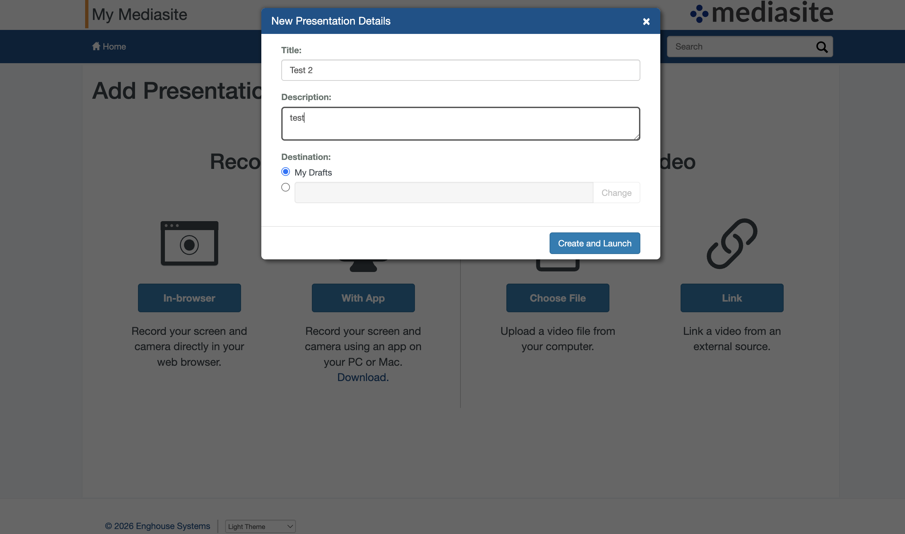
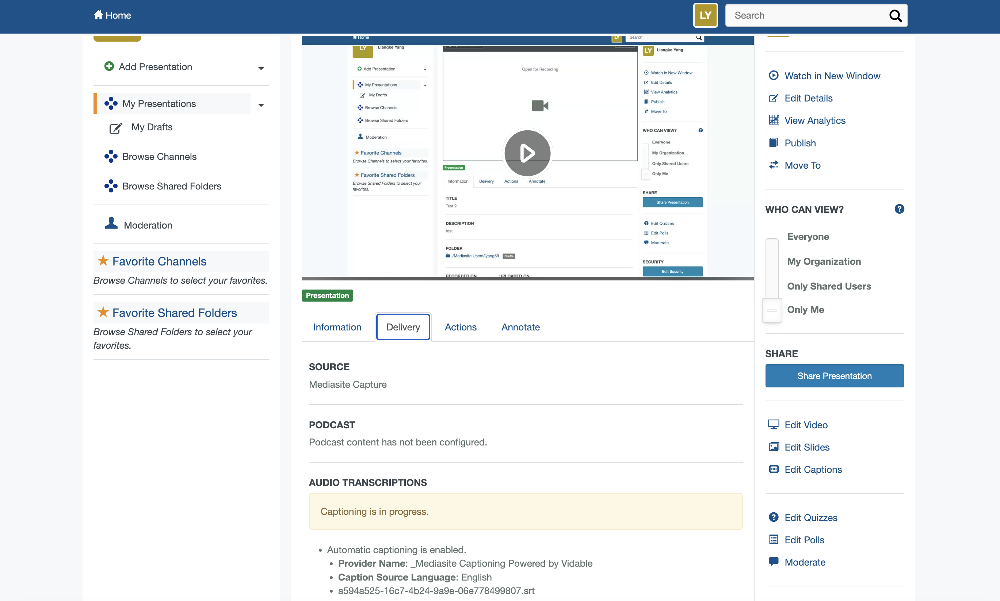
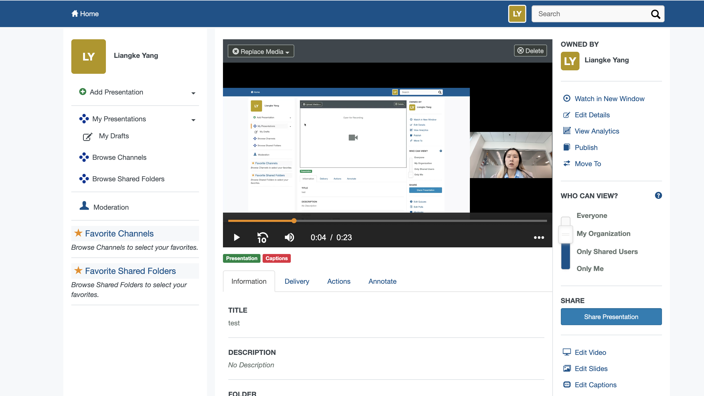
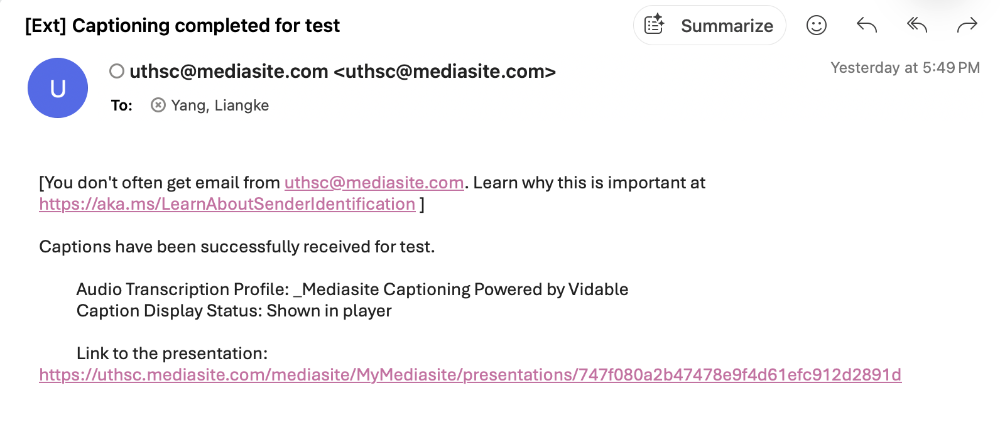
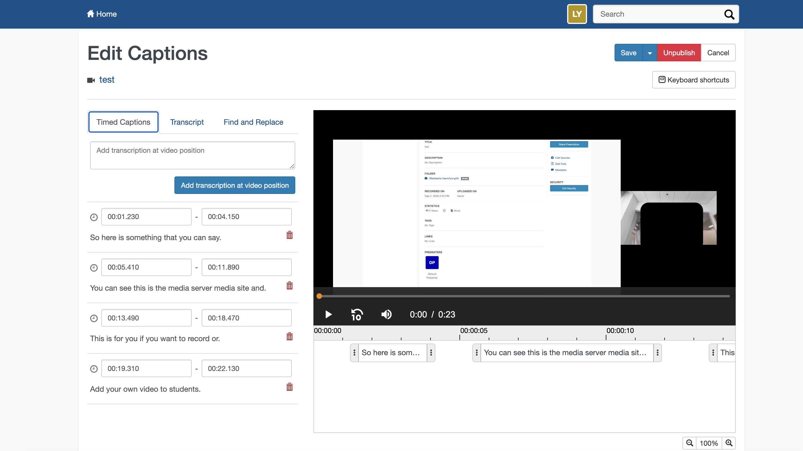
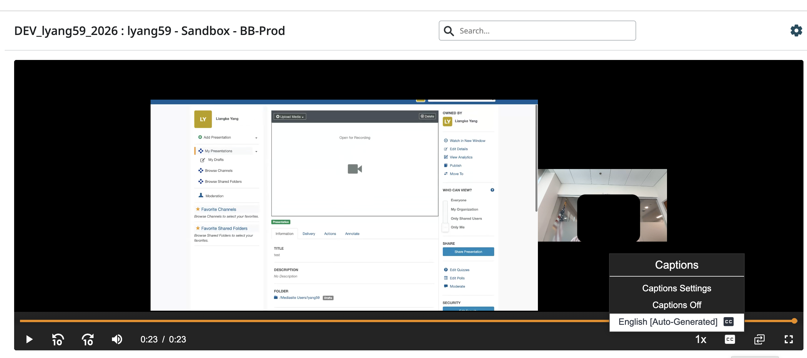

Captions in Mediasite
Captions are generated automatically at UTHSC. You do not request them — your only task is reviewing them for accuracy.
Step 1 — Upload or record your video
Sign in to Mediasite and select Add Presentation. Choose Choose File to upload an existing video, or In-browser to record directly. Enter a title, then select Create and Launch.
Leave Destination set to My Drafts. Once processing finishes, the presentation moves into your own folder automatically — no action needed.


Step 2 — Captioning begins automatically (nothing to do)
Open the Delivery tab and you will see “Captioning is in progress” under Audio Transcriptions. Captioning is handled by Mediasite Captioning Powered by Vidable and starts on its own. You can close the tab and continue working.

Step 3 — You receive an email when captions are ready (nothing to do)
Mediasite sends a “Captioning completed” email containing a direct link to the presentation. In My Presentations, the video also gains a red Captions label.


Step 4 — Review and correct the captions (this is your part)
Open the presentation and select Edit Captions in the right-hand menu. Captions appear as timed segments you can edit directly. Use the Find and Replace tab to fix a term that recurs throughout the recording, then select Save.

To confirm your edits are live, play the video and turn captions on from the CC menu. Verify that a phrase you corrected now appears as edited — the menu label continues to read English [Auto-Generated] regardless of your edits, so it is not a reliable indicator.

Quick Check
- Has the presentation finished processing and moved out of My Drafts?
- Did the “Captioning completed” email arrive, or does the red Captions label appear?
- Have drug names, anatomical terms, and abbreviations been checked?
- Are personal and institutional names spelled correctly?
- Were changes saved with Save rather than discarded?
- Do corrected phrases appear when captions are turned on in the player?
This independently maintained resource provides general instructional design guidance. It does not represent official institutional policy or replace program, accreditation, legal, or accessibility requirements.